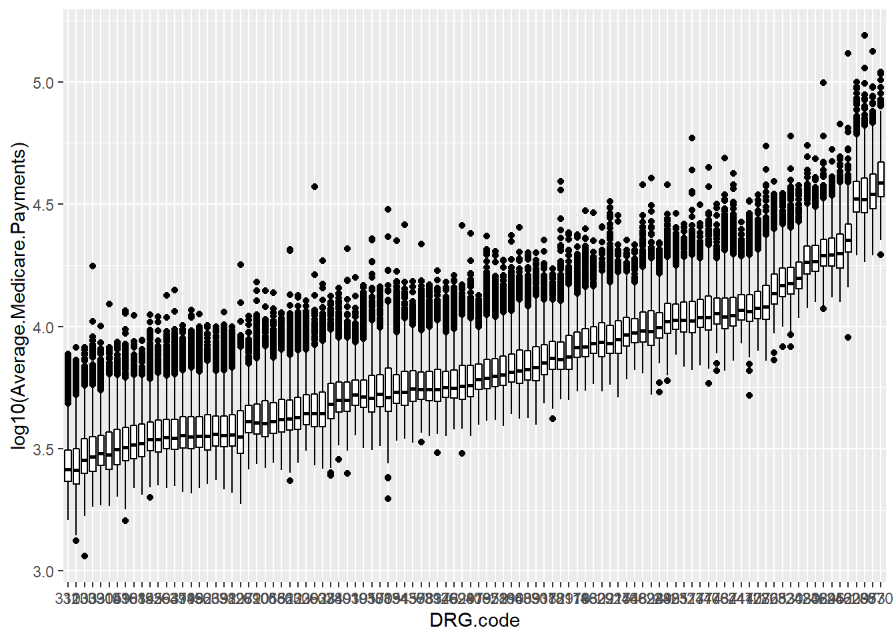

ggplot
Fei Zhang
2019-10-26
Introduction
ggplot()
A Tutorial Vieo of ggplot from Youtube
If you want to learn more about making plots in R by using ggplot, please watch this video.

ggplot() initializes a ggplot object. It can be used to declare the input data frame for a graphic and to specify the set of plot aesthetics intended to be common throughout all subsequent layers unless specifically overridden. see https://blog.rstudio.com/2016/11/14/ggplot2-2-2-0/
ggplot(data = NULL, mapping = aes(), ..., environment = parent.frame())
Arguments
data: Default dataset to use for plot. If not already a data.frame, will be converted to one by fortify(). If not specified, must be supplied in each layer added to the plot.
mapping: You can define x and y inside of mapping by using mapping = aes(x , y)
Details
ggplot() is used to construct the initial plot object, and is almost always followed by + to add component to the plot. There are three common ways to invoke ggplot:
`ggplot(data, aes(x, y, other aesthetics))`
`ggplot(data)`
`ggplot()`The first method is recommended if all layers use the same data and the same set of aesthetics, although this method can also be used to add a layer using data from another data frame. The second method specifies the default data frame to use for the plot, but no aesthetics are defined up front. Therefore, you need to add aesthetics to following layers. This is useful when one data frame is used predominantly as layers are added, but the aesthetics may vary from one layer to another. The third method initializes a skeleton ggplot object which is fleshed out as layers are added. This method is useful when multiple data frames are used to produce different layers, as is often the case in complex graphics.
Example1 - boxplot
Let’s make a single plot with boxplots of the average medicare payments by DRG code:
Step1
Loading the data, and we can view the dataset by using View() or head().
*View() can offer you a whole picture of dataset in a new window
*head() can list first 10 rows of the dataset
drg <- read.csv("data/DRG_data.csv")
head(drg)
## DRG.Definition Provider.Id
## 1 039 - EXTRACRANIAL PROCEDURES W/O CC/MCC 10001
## 2 039 - EXTRACRANIAL PROCEDURES W/O CC/MCC 10005
## 3 039 - EXTRACRANIAL PROCEDURES W/O CC/MCC 10006
## 4 039 - EXTRACRANIAL PROCEDURES W/O CC/MCC 10011
## 5 039 - EXTRACRANIAL PROCEDURES W/O CC/MCC 10016
## 6 039 - EXTRACRANIAL PROCEDURES W/O CC/MCC 10023
## Provider.Name Provider.Street.Address
## 1 SOUTHEAST ALABAMA MEDICAL CENTER 1108 ROSS CLARK CIRCLE
## 2 MARSHALL MEDICAL CENTER SOUTH 2505 U S HIGHWAY 431 NORTH
## 3 ELIZA COFFEE MEMORIAL HOSPITAL 205 MARENGO STREET
## 4 ST VINCENT'S EAST 50 MEDICAL PARK EAST DRIVE
## 5 SHELBY BAPTIST MEDICAL CENTER 1000 FIRST STREET NORTH
## 6 BAPTIST MEDICAL CENTER SOUTH 2105 EAST SOUTH BOULEVARD
## Provider.City Provider.State Provider.Zip.Code
## 1 DOTHAN AL 36301
## 2 BOAZ AL 35957
## 3 FLORENCE AL 35631
## 4 BIRMINGHAM AL 35235
## 5 ALABASTER AL 35007
## 6 MONTGOMERY AL 36116
## Hospital.Referral.Region.Description Total.Discharges
## 1 AL - Dothan 91
## 2 AL - Birmingham 14
## 3 AL - Birmingham 24
## 4 AL - Birmingham 25
## 5 AL - Birmingham 18
## 6 AL - Montgomery 67
## Average.Covered.Charges Average.Total.Payments Average.Medicare.Payments
## 1 32963.07 5777.24 4763.73
## 2 15131.85 5787.57 4976.71
## 3 37560.37 5434.95 4453.79
## 4 13998.28 5417.56 4129.16
## 5 31633.27 5658.33 4851.44
## 6 16920.79 6653.80 5374.14Step2
To make the plot, we need to install and library package of ggplot2().
library(ggplot2)Step3
Making a single plot with side-by-side boxplots using geom_boxplot(). And we can reorder DRG codes by median of Average Medicare Payments to make the boxplot orderly using reorder() in with().
drg.new$DRG.code = with(drg.new, reorder(DRG.code, Average.Medicare.Payments, mean))
p1 <- drg.new%>%
ggplot(aes(x = DRG.code,
y = log10(Average.Medicare.Payments)))+
geom_boxplot(position = "identity", fill ="white",col = "black")
p1
Step4
We can change the labels of the plot
p2 <- p1+
labs(title = "\nBoxplots of The Average Medicare Payments \nby DRG codes\n",
x = "DRG codes",
y = "Average Medicare Payments")
p2Step5
We can change the format of the plot.
p3 <- p2 +
theme(axis.title.y = element_text(size = 10,angle = 90),
axis.text.x = element_text(size = 7,angle = 90),
plot.title = element_text(hjust = 0.5))
p3
Step6
Assign values to the y axis using scale_y_continuous which is included in the package ‘purrr’.
library(purrr)
p3 +
scale_y_continuous(breaks = c(3,log10(5000),4,log10(50000),5),
labels = c("$1,000","$5,000","$10,000","$50,000","$100,000"))
Copyright © 2019 Fei Zhang, All rights reserved.